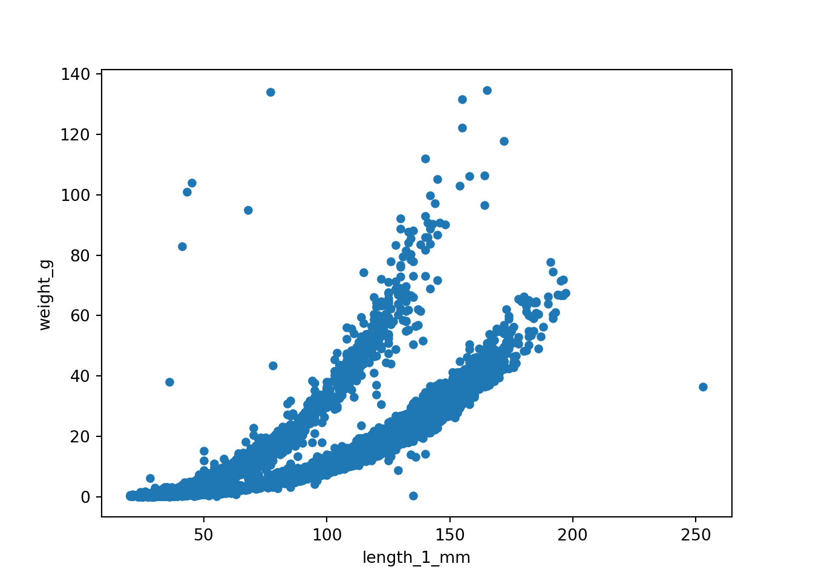

Figure 1: Length and size of trout and salamander based on stream location.
Now for some Python
Code
import pandas as pdtrout_salamander_py = pd.read_csv('data/and_vertebrates.csv')trout_salamander_py.head()
year sitecode section reach ... weight_g clip sampledate notes
0 1987 MACKCC-L CC L ... 1.75 NONE 1987-10-07 NaN
1 1987 MACKCC-L CC L ... 1.95 NONE 1987-10-07 NaN
2 1987 MACKCC-L CC L ... 5.60 NONE 1987-10-07 NaN
3 1987 MACKCC-L CC L ... 2.15 NONE 1987-10-07 NaN
4 1987 MACKCC-L CC L ... 6.90 NONE 1987-10-07 NaN
[5 rows x 16 columns]
import matplotlib.pyplot as plttrout_salamander_py.plot(x='length_1_mm', y='weight_g', kind='scatter')plt.show()

now to try tabset panels
Tip
Use font awesome to add icons to the tab headers. To improve accessibility, use a11y = "sem" to get the icon title when you hover over it. Use a11y = "deco" for decorative icons and a11y = "sem" for semantic icons.
::: panel-tabset## 'r fontawesome::fa("r-project", fill = "#5A5A5A", a11y = "sem")` R## 'r fontawesome::fa("python", fill = "#5A5A5A", a11y ="sem")` Python:::
Does anyone know how to show the code above but with an actual backtick at the beginning of the lines?
```{markdown}::: panel-tabset## `r fontawesome::fa("r-project", fill = "#5A5A5A", a11y = "sem")` R## `r fontawesome::fa("python", fill = "#5A5A5A", a11y ="sem")` Python:::```
Horst A, Brun J (2022). lterdatasampler: Educational dataset examples from the Long Term Ecological Research program. R package version 0.1.0, https://github.com/lter/lterdatasampler.